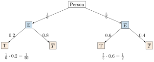

Aufgabe 5.3
In einem oberbayerischen Ferienort leben während der Hochsaison fünfmal so viele Touristen wie Einheimische. $60\%$ der Touristen stolzieren dabei in Lederhosen oder Dirndlkleid umher. Dagegen legt nur jeder/jede 5. Einheimische Tracht an. Auf der Strasse begegnet uns während der Hochsaison eine Person im Trachtenkleid. Wie gross ist die Wahrscheinlichkeit, dass die Person einheimisch ist?
- Definieren Sie die Ereignisse E (einheimisch) und T (trägt Tracht)
- Bestimmen Sie zuerst die Anteile von Einheimischen und Touristen
- Verwenden Sie die Formel für die totale Wahrscheinlichkeit
- Wenden Sie den Satz von Bayes an
Gegeben:
- 5-mal so viele Touristen wie Einheimische
- $P_{\overline{E}}(T) = 0.6$ (60% der Touristen tragen Tracht)
- $P_E(T) = 0.2$ (20% der Einheimischen tragen Tracht)
Gesucht: $P_T(E)$ (Wahrscheinlichkeit für Einheimische bei Tracht)
Schritt 1: Berechnung der Grundwahrscheinlichkeiten
Wenn auf 1 Einheimischen 5 Touristen kommen:
- $P(E) = \frac{1}{6}$ (Anteil Einheimische)
- $P(\overline{E}) = \frac{5}{6}$ (Anteil Touristen)
Lösung mit Baumdiagramm:

Schritt 2: Berechnung der Pfadwahrscheinlichkeiten
- Pfad «Einheimisch und Tracht»: $P(E \cap T) = \frac{1}{6} \cdot 0.2 = \frac{1}{30}$
- Pfad «Tourist und Tracht»: $P(\overline{E} \cap T) = \frac{5}{6} \cdot 0.6 = \frac{1}{2}$
Schritt 3: Totale Wahrscheinlichkeit für Tracht
$$P(T) = P(E \cap T) + P(\overline{E} \cap T) = \frac{1}{30} + \frac{1}{2} = \frac{1}{30} + \frac{15}{30} = \frac{16}{30} = \frac{8}{15}$$
Schritt 4: Anwendung des Satzes von Bayes
$$P_T(E) = \frac{P(E \cap T)}{P(T)} = \frac{\frac{1}{30}}{\frac{8}{15}} = \frac{1}{30} \cdot \frac{15}{8} = \frac{15}{240} = \frac{1}{16} = 0.0625 = 6.25\%$$
Antwort:
Die Wahrscheinlichkeit, dass eine Person in Tracht einheimisch ist, beträgt nur etwa 6.3%.
Interpretation:
Obwohl prozentual weniger Touristen Tracht tragen (60% vs. 20% bei Einheimischen), ist die überwältigende Mehrheit der Trachtenträger touristisch. Dies liegt an der fünffachen Überzahl der Touristen - ein klassisches Beispiel für die Bedeutung von Basisraten.

Im Video: Etappe 8 · Satz von Bayes bei 7:00